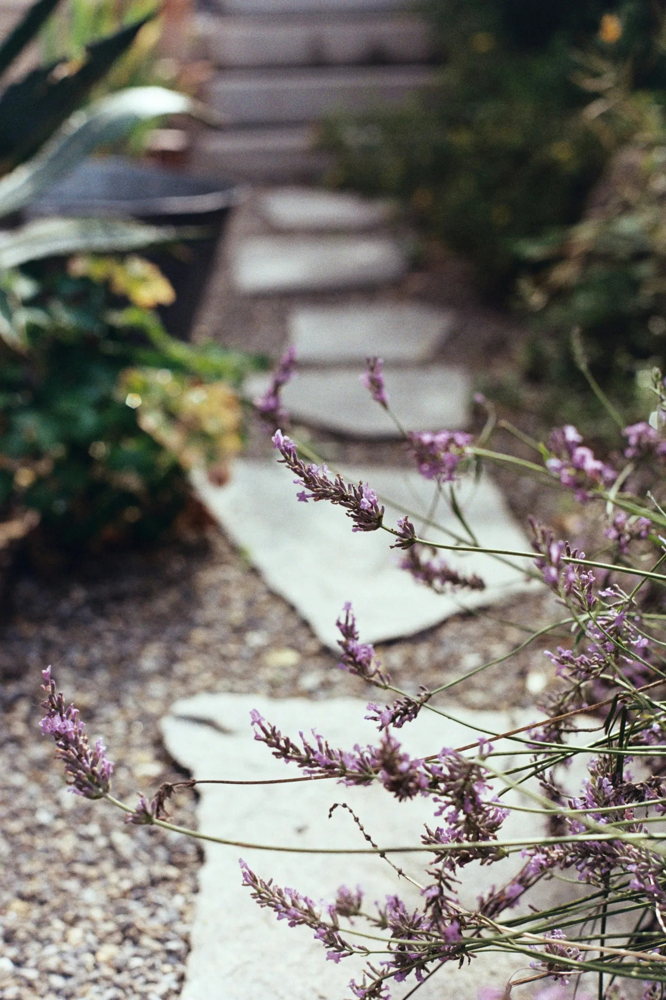
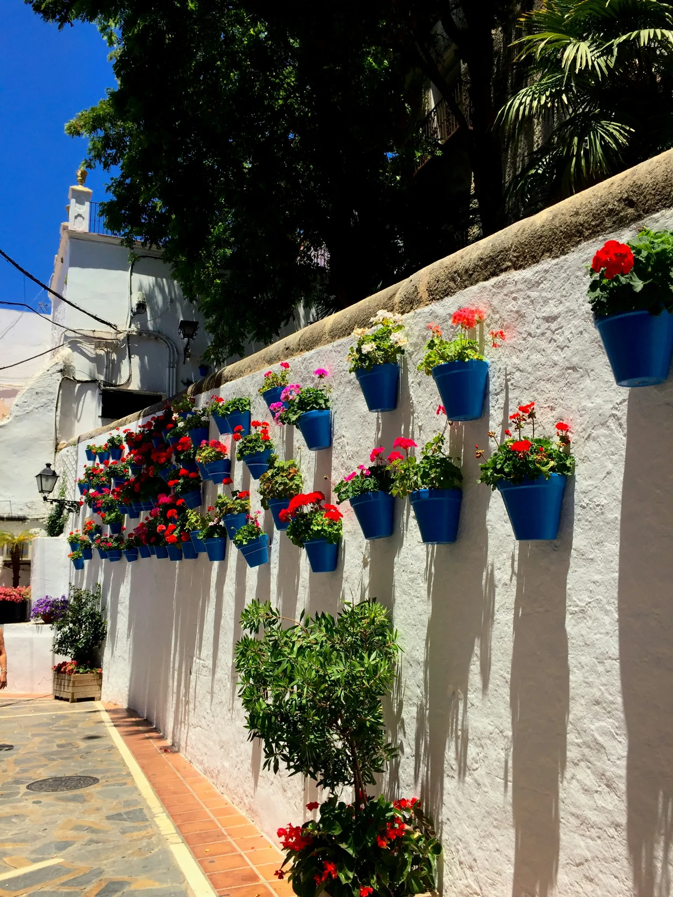
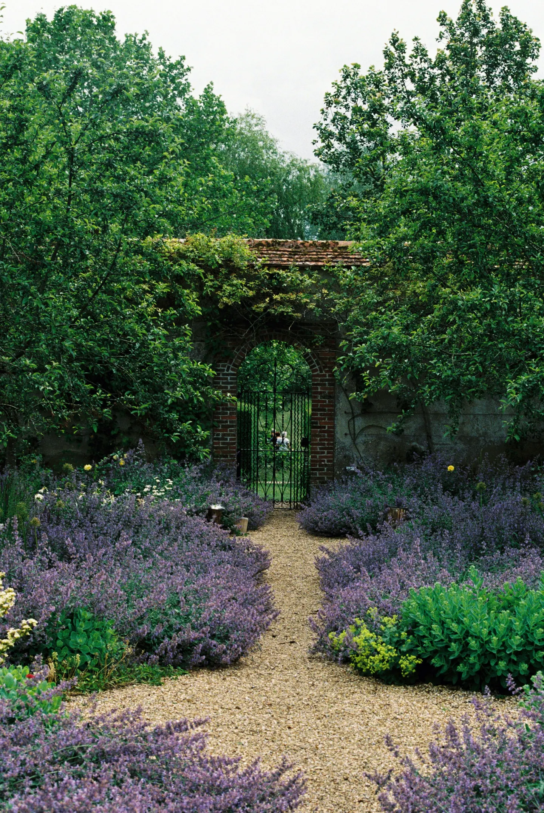
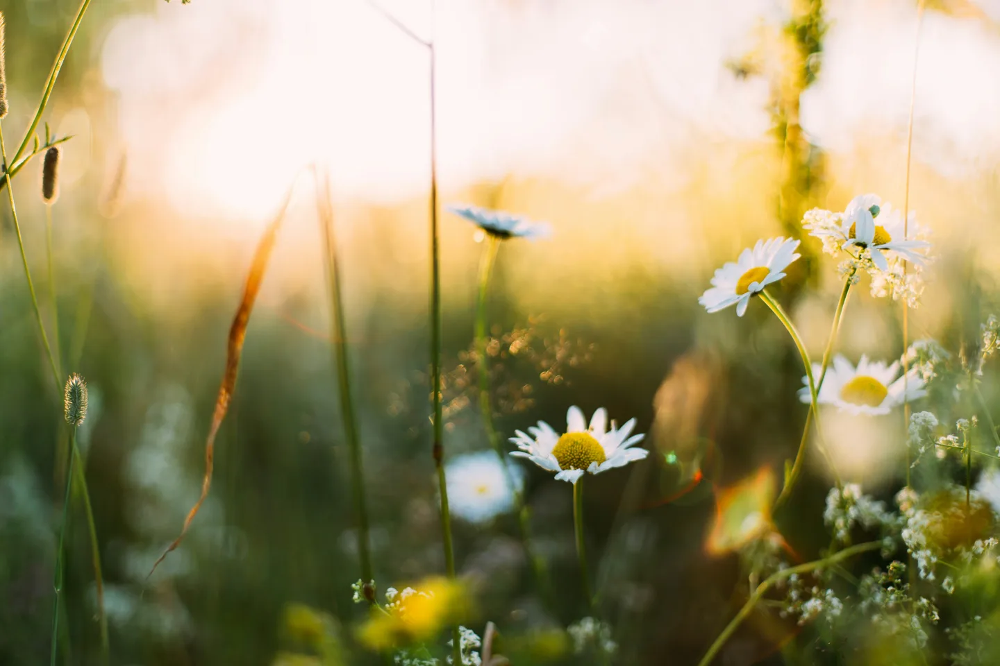
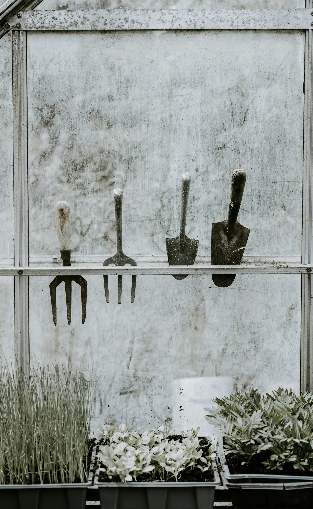

September in the garden: the start of next year
Autumn planting, dividing perennials, spring bulbs and the questions worth asking before next year.
Read SeptemberIdeas and advice for garden projects and year-round care.
Simple, seasonal guidance for gardens across Surrey, Sussex and Hampshire.

Autumn planting, dividing perennials, spring bulbs and the questions worth asking before next year.
Read September
Deadheading, watering, lavender and why late summer is the right time to look at garden structure.
Read AugustWatering properly, looking after new planting and letting the garden be a little less controlled.
Read July
Watering, staking and deadheading, plus a useful check on how you actually use the garden.
Read June
Planting, watering, lawns, weeds and checking carefully for nesting birds before hedge work.
Read May
Borders, lawns, planting, feeding and protecting tender growth from the last cold nights.
Read April